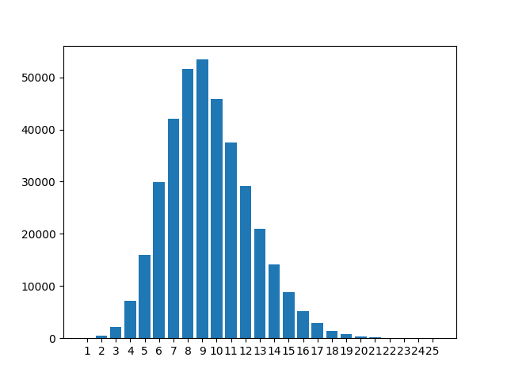
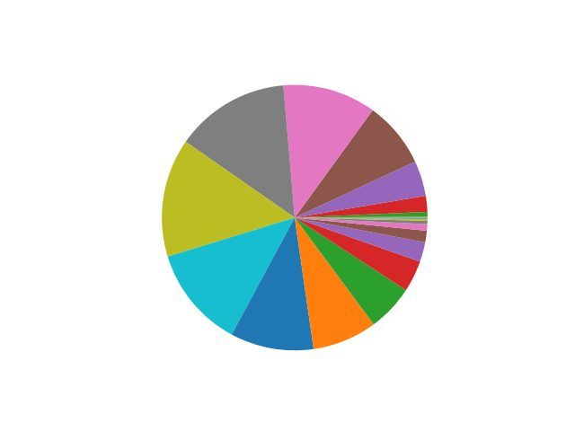
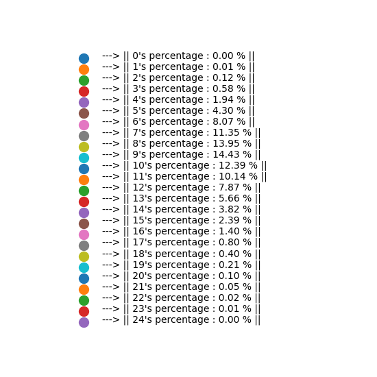
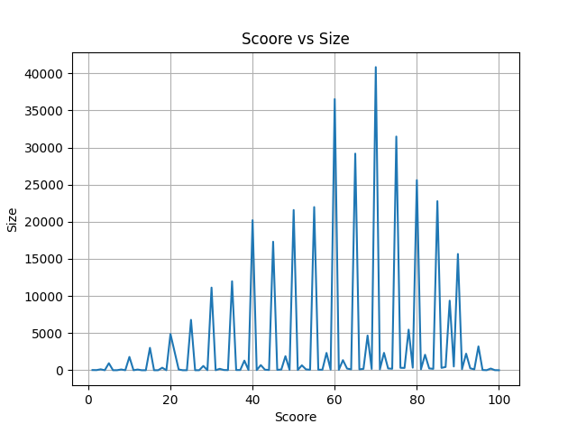
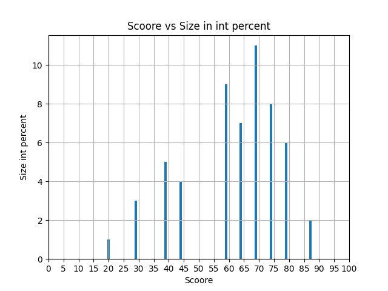
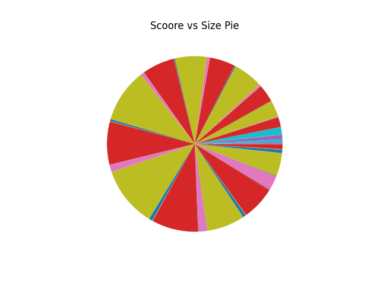
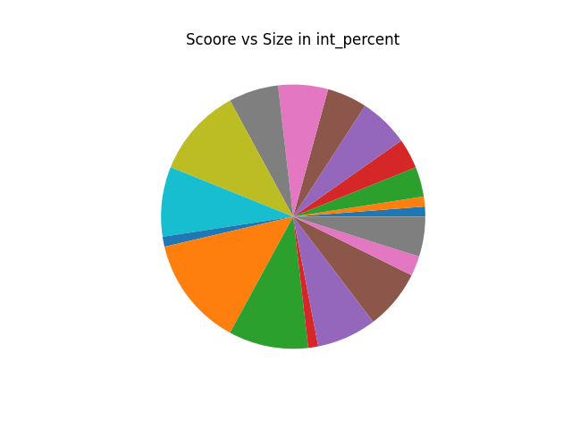
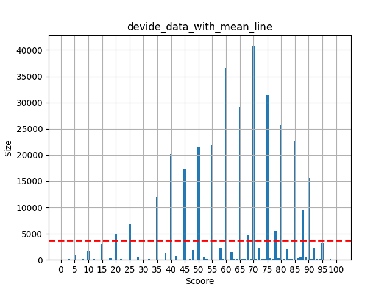
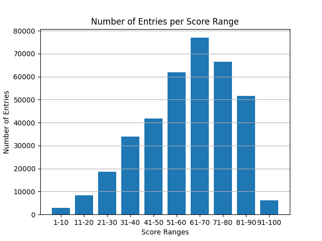

About us
A language is a doorway to a new way of thinking. Yet, the voyage into English often requires a specialized map. For those who think, dream, and create in Bangla, rote memorization is not enough. You need an intuitive and powerful tool.
Welcome,Word Voyager. This is a project born from the conviction that learning should be analytical, challenging, and deeply personalized. Our massive vocabulary database, fine-tuned by a unique filtering process, ensures you always face a problem tailored to your skill level.
Game Details and How to Play:
Word Voyager is an adaptive, progressive English vocabulary game specifically designed for Bengali speakers. The core mechanism is based on a scoring system that dynamically changes the difficulty of the questions, ensuring the challenge is always tailored to your current skill level.
Game Flow and Rules:---
The Question: The top section of the screen displays a Bengali word's meaning or phrase. This is the Question.
The Options: Below the question, four possible English word translations are presented inside the colored answer boxes.
The Goal: You must analytically and logically select the correct English word that matches the Bengali meaning.
The Action: Click the corresponding action button (marked with |||) next to your chosen option.
Feedback: The game provides immediate audio feedback (a correct or wrong sound) and highlights the correct answer before loading the next question.
Scoring and Progression (The "Hardening" Logic):---
Correct Answer: You earn +10 points and move closer to the next, harder level.
Wrong Answer: You lose -5 points, encouraging careful consideration of the options rather than random guessing.
Adaptive Difficulty: The game continuously checks your score to upgrade your Voyage Level. For example, scoring above 100 points moves you out of Level 2 questions and into the progressively harder Level 3 content, which features longer and less common words from the data pool.
Game Buttons:---
Start Challenge: Starts the game, loads the first question from Level 1, and enables the background music.
Github: Links directly to the developer's public Github account/repository.
School Details: Links to the school website or details related to our school.
Music: Toggles the background music on or off.
Restart: Resets your score to 0 and immediately restarts the game from Level 1.
Game Details: Reloads the entire page, returning you to the Welcome Screen and the About Us page.
Our Mission:
Word Voyager was designed to provide students, young adults, and even elders an overall knowledge of English terminology, focusing specifically on tricky words and complex concepts often challenging for Bengali speakers. We aim to move beyond simple translation to encourage a deep, analytical understanding of the English language.
The Data-Driven Methodology:
The core strength of this game is its immense, hand-prepared dataset. The process was a time-intensive labor of logic and filtering. A huge raw dataset was collected and initially split based on word length.Over 350,000 Bengali meanings were synthesized in real-time, providing the contextual bridge necessary for effective learning.The data was then re-split and rigorously filtered based on the hardness of the words.Finally, the vocabulary was collected and organized into 10 distinct difficulty levels (Levels 1-10).This detailed process ensures that as your score increases, the problems will progressively harden, becoming more difficult, interesting, and thought-provoking than the last a true test of critical thinking over simple recall.
The Word Data:
These Datas show the makeup of 350,000+ word vocabulary based on how long each word is (its character length).
The Core Vocabulary (The Most Words):---
The tallest bars and biggest slices on the charts show words that are 8, 9, or 10 characters long. This length is the sweet spot for intermediate and advanced English. Because over 40% of the entire word list falls into this one area, have a massive, deep pool of challenging words. This huge concentration ensures that middle levels (Levels 4 through 8) will have endless variety, keeping the game engaging and preventing players from seeing the same questions over and over.
The Easy Words (The Starting Point):---
Words that are very short (1 to 6 characters long) make up a much smaller percentage of the total. These simpler words are placed in the Introductory Levels (Levels 1 through 3). This allows kids and elders to start slowly, build confidence, and get used to the gameplay before the real challenge begins.
The Hardest Words (The Final Challenge):---
Words that are very long (15 characters or more) are extremely rare, showing up as tiny slices on the pie chart. These rare, complex words are saved for the ultimate challenge in Levels 9 and 10. They become the special, difficult questions that reward players who achieve high scores.
The Pie Chart and Word Length Concentration:---
The pie chart visually confirms the data efficiency of the massive vocabulary. It shows that the largest data volume is intentionally concentrated in the 8-to-10 character range, optimizing the dataset for the most practical, intermediate vocabulary rather than being dominated by simple or extremely rare words. This uneven, weighted distribution mathematically validates the necessity of your score-based level selection logic in the game's code, which ensures players escape the massive central pool and progress to the sparser, harder levels as their score increases.
The percentages of the colours in the pie chart:---
The percentages of the elements(colours) of pie chart are shown here.
Post-Processing Data Analysis, Score vs. Size:---
The "Scoore vs Size" graph shows the final, processed distribution of your vocabulary, where the X-axis (Scoore) represents the hardness level (or complexity) assigned to a word, and the Y-axis (Size) represents the number of words at that specific hardness level.
Analysis of the "Scoore vs Size Bar" Graph:---
Categorized Difficulty: The separated bars show that all our words are neatly sorted into distinct groups, ensuring that when you jump from one level to the next, the vocabulary truly gets harder—it's never just a blurry mix.
Focus on Mastery: The majority of our challenging content is concentrated in the middle scores, which supports our intermediate levels (Levels 4-8). This means you'll find the largest variety of interesting and useful words exactly where you need them most, guaranteeing that the path to mastery is always engaging and non-repetitive.
Normalization (The Percentage Calculation):---
We took the total count of all processed words (the sum of the Y-axis bars from the original "Scoore vs Size" graph). Then, for every specific Score (like Score 70 or Score 45), the word count for that score was divided by the total word count and multiplied by 100. The Y-axis changed from showing the large raw number of words ("Size") to showing the percentage ("Size in int percent") of the total vocabulary that falls into that specific difficulty score, and all the percentages less than 1 are muted or removed from this plot. This makes the distribution instantly comparable and easy to understand. This 10 bars which can be seen covers the 86% of the data , means 14% data is distributed to the groups of the scoore which contains less then 1% of the total data.
Observations of the data in pie chart:---
This pie chart of the data , the data where we splited the words bassed on the hardness of the words, confirms that some specific groups had the most of the words inside
Observations of the data in pie chart as intiger percentages:---
Here we eleminated all the groups containing less than 1% of the total data, and this is in pie format here.
Score Distribution with Mean Line:---
This graph plots the Hardness Score (X-axis), which represents the vocabulary difficulty, against the Word Count (Y-axis), which is the number of words at that specific difficulty. The key feature is the Mean Line (the horizontal red dashed line). This line represents the Average Expected Word Count if the entire vocabulary dataset were divided perfectly equally among the 10 core difficulty levels of the game.
Grouped Score Distribution:---
The graph "Number of Entries per Score Range" groups your processed vocabulary into 10-point difficulty brackets (X-axis) and shows the total Number of Entries (Y-axis) in each bracket.
The Normal Distribution (Bell Curve): The data forms a clear, symmetrical bell curve, rising smoothly from the low-score ranges and peaking near the center before declining smoothly toward the high-score ranges. This outcome confirms the statistical soundness of the initial data processing. A bell curve is the ideal distribution for a large educational or testing dataset, as it ensures:
Validation of Core Levels: The curve peaks sharply in the 61-70 score range, with approximately 77,000 entries. The surrounding ranges (51-60 and 71-80) also hold a massive number of words (over 60,000 each). This validates that the core levels of Word Voyager (Levels 4 through 8) are supported by the greatest volume of diverse content. This smooth, rich content flow guarantees maximum engagement and ensures that the player will face unique, progressively hardening vocabulary throughout the main portion of the game.
About Developer:
This entire game was designed and prepared from zero by Tiyas Banerjee (find the work on Github) during October 2025, while in Class 9 at Biruha Sarat Chandra Uchha Vidyalaya, with the guidance of Koushik Sir and Ayan Ghoshal Sir.
This project is fully free and user-friendly—no ads, no financial benefit for the developer. We want people to see the work and judge it correctly, based on its merit and contribution. We are deeply committed to open source and will continue to work on small updates to make the Word Voyager journey ever smarter and more effective.